Important Dates
| Direct paper submission deadline | |
|---|---|
| Pre-reviewed ARR commitment deadline | TBA |
| Notification of acceptance | |
| Camera-ready paper due | |
| Conference dates | – |
| Workshop date | To be announced |
Overview
BilingLM 2027 aims to bridge human bilingualism and multilingual language models. We bring together researchers in natural language processing, linguistics, cognitive neuroscience, and education to explore learning, representation, and language use across humans and machines.
As language models become increasingly multilingual, questions about how they acquire, represent, and generate multiple languages echo long-standing questions in human bilingualism. Do models show critical periods for learning a second language? Do they develop shared semantic spaces or language-specific mechanisms? Which learning dynamics are shared by humans and language models, and where do they differ?
Our inaugural, one-day workshop provides a forum for interdisciplinary research and discussion: how can language models support bilingualism research, and how can findings about human bilingualism inform language modeling?
Topics of Interest
We welcome research on the following themes, including but not limited to:
- Language Acquisition and Learning. Human bilingual and second-language acquisition; cognitively plausible training of multilingual language models; bilingual BabyLM approaches; learning from limited, child-directed data; and comparisons of learning trajectories and critical period effects.
- Bilingual Representations and Mechanisms. Shared and language-specific representations; cross-lingual knowledge alignment; mechanistic interpretability; and comparisons between language model representations and human brain activity during bilingual processing.
- Code-Switching and Language Use. Patterns and mechanisms of code-switching in humans and language models; evaluation on code-switched benchmarks; processing code-mixed text; and generating naturalistic, grammatical code-switched language.
- Applications and Societal Impact. Language-model-assisted bilingualism research and corpus annotation; bilingual education and language assessment; and sociolinguistic questions about language ideologies, dialect prejudice, and multilingual training data.
We particularly encourage work on low-resource language pairs, diverse language families, and bilingual populations underrepresented in current research.
Invited Speakers
To be announced
Organizers
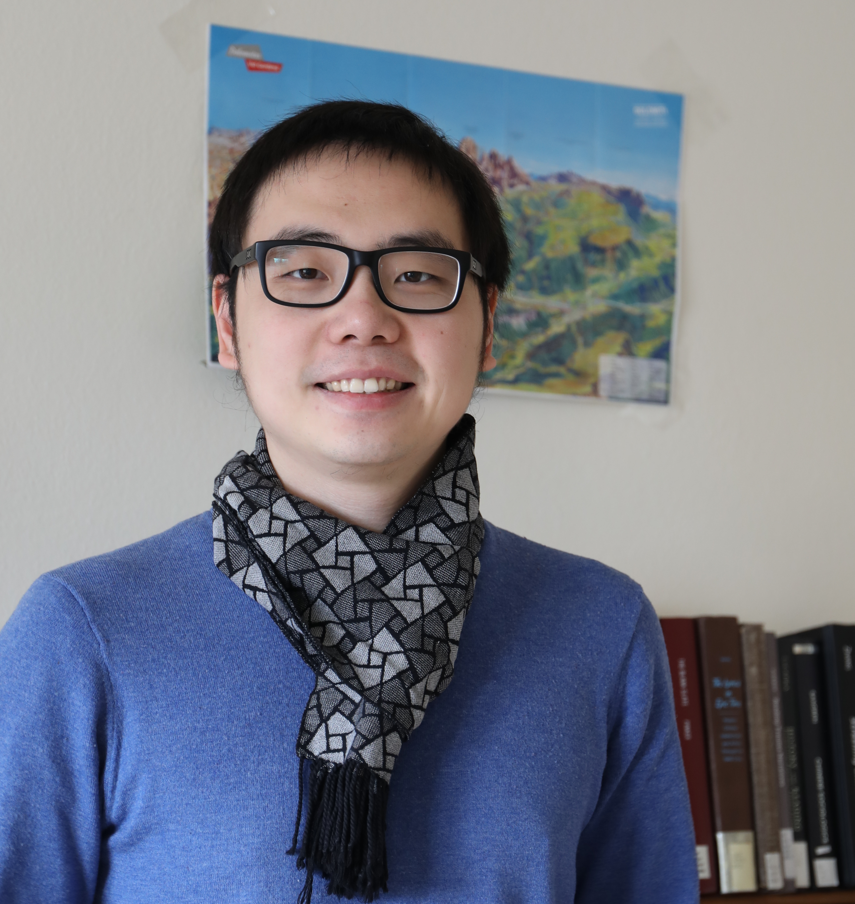
Hai Hu
The Hong Kong Polytechnic University
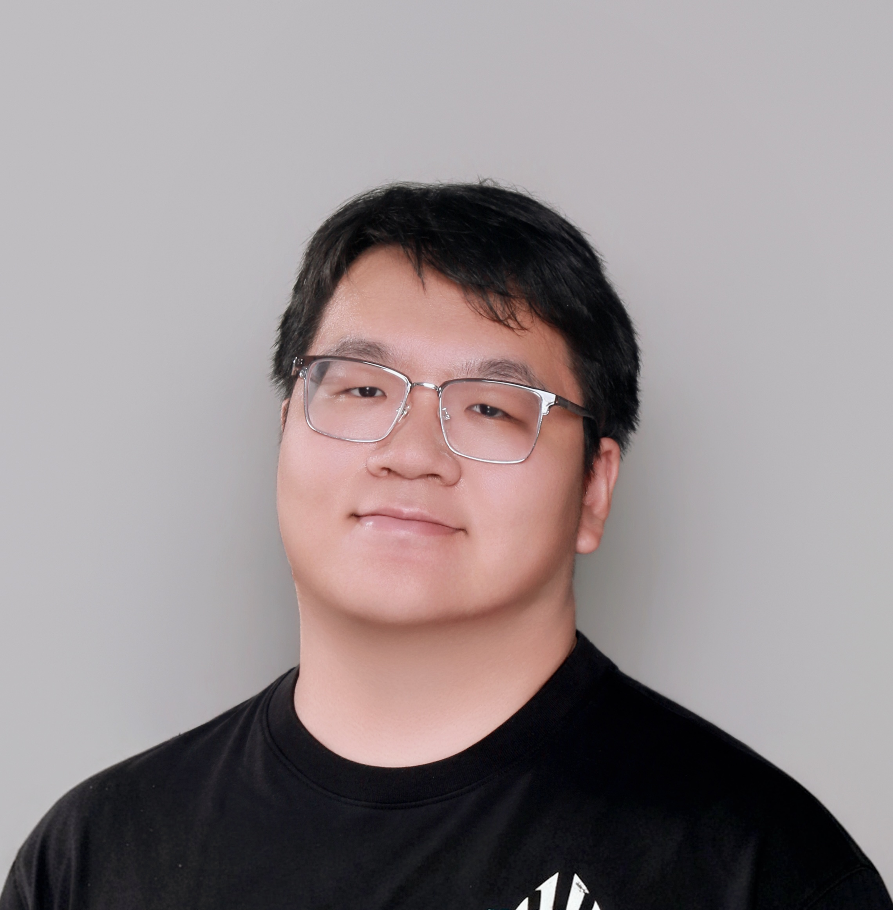
Siyuan Song
Princeton University
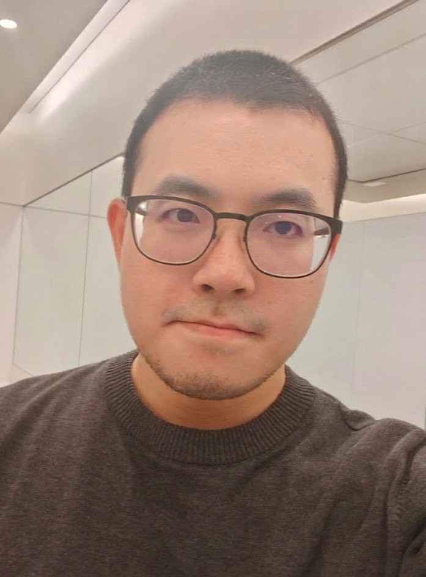
Linyang He
Columbia University
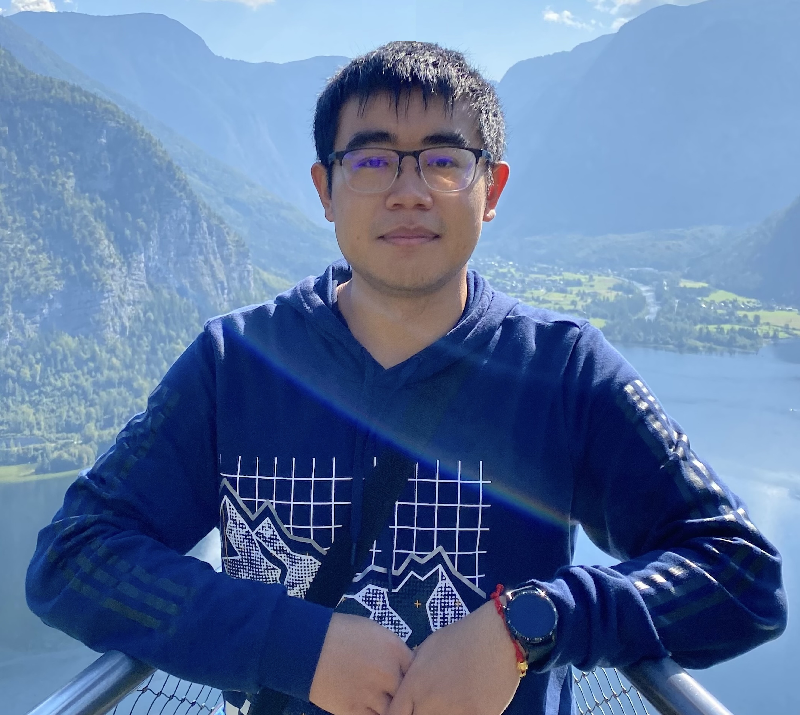
Ercong Nie
Shanghai Jiao Tong University
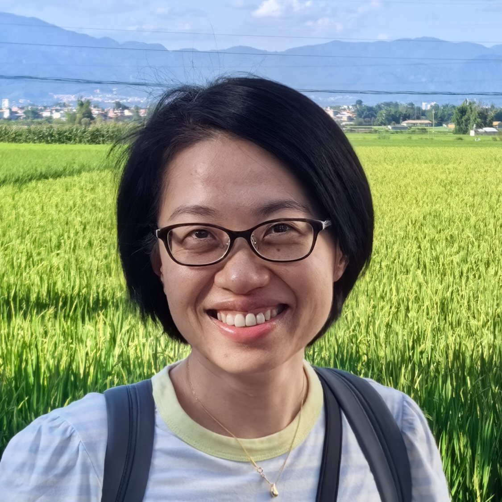
Ziyin (Maggie) Mai
The Chinese University of Hong Kong
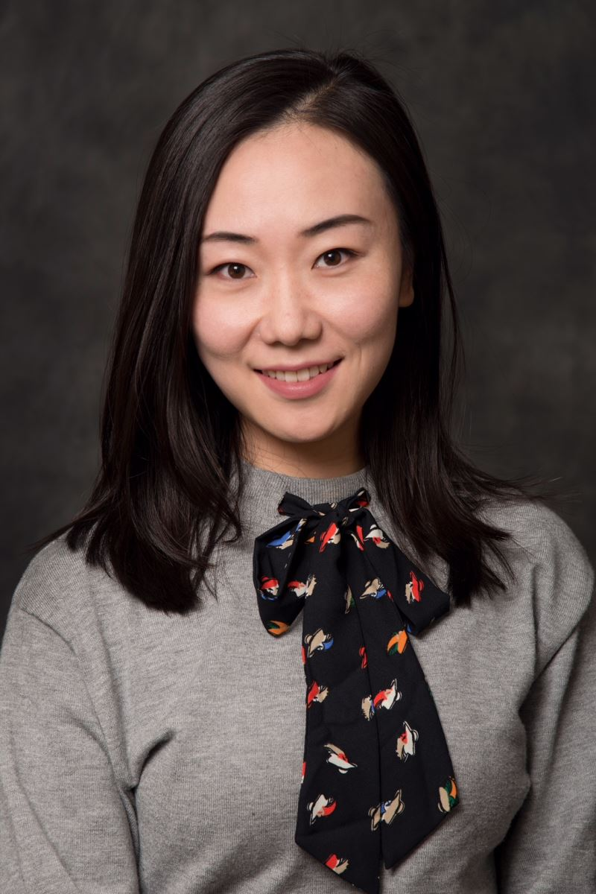
Luan Li
Shanghai Jiao Tong University
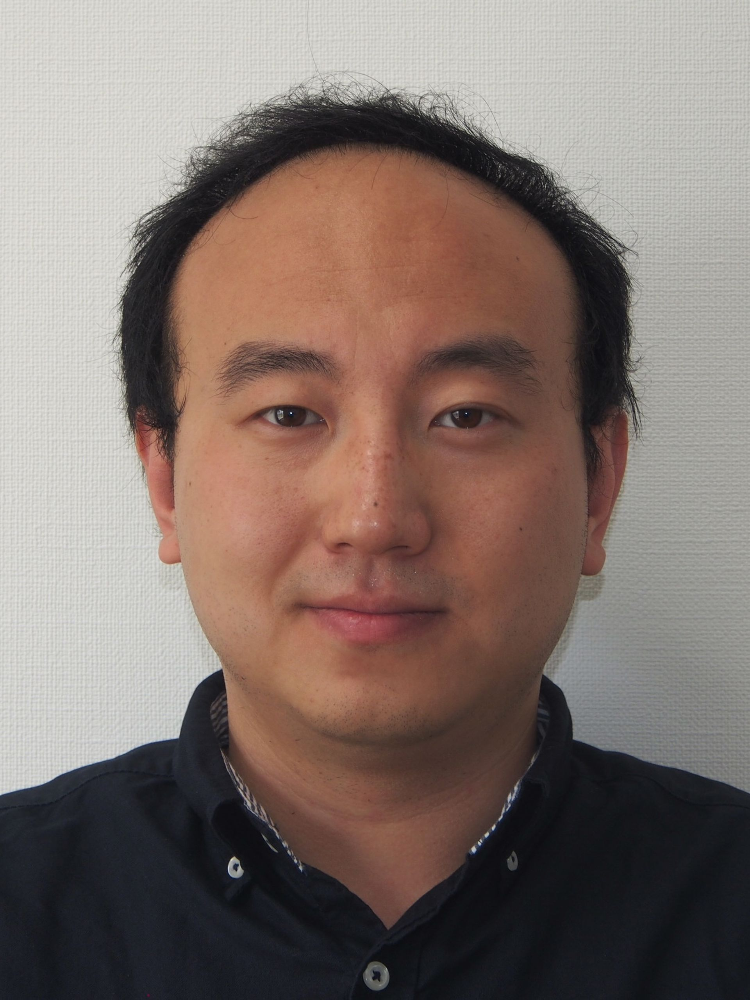
Rui Wang
Shanghai Jiao Tong University
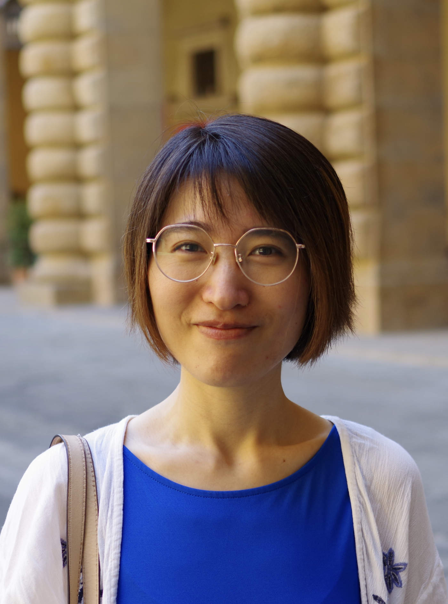
Renfen Hu
Beijing Normal University
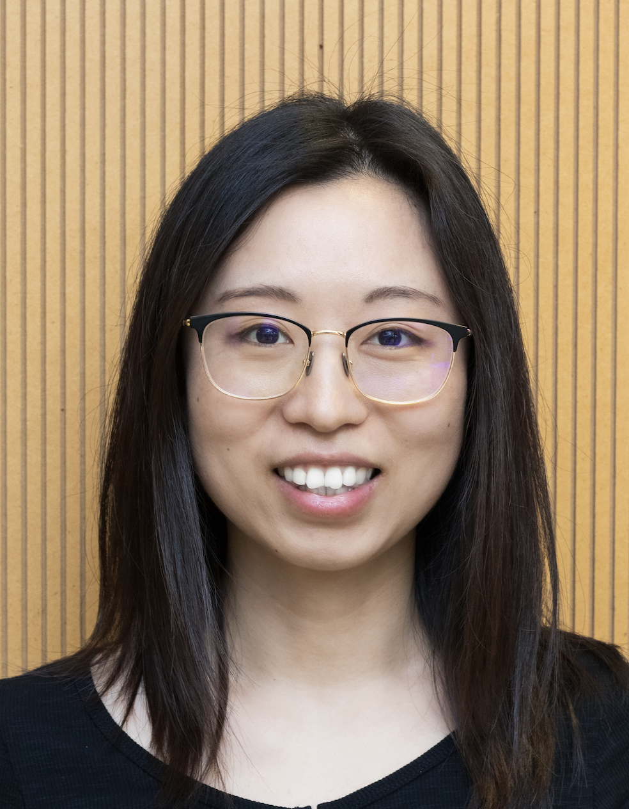
Shaonan Wang
The Hong Kong Polytechnic University
Yunhao Zhang
Institute of Automation,
Chinese Academy of Sciences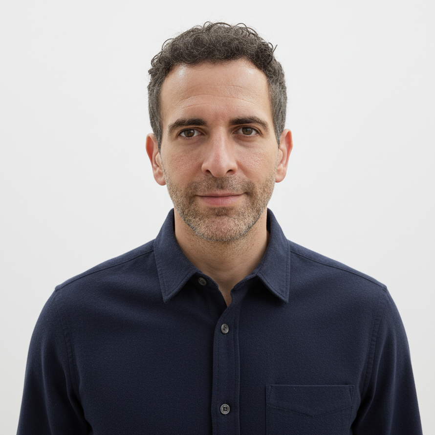
Adel Chaouch-Orozco
City University of Hong Kong
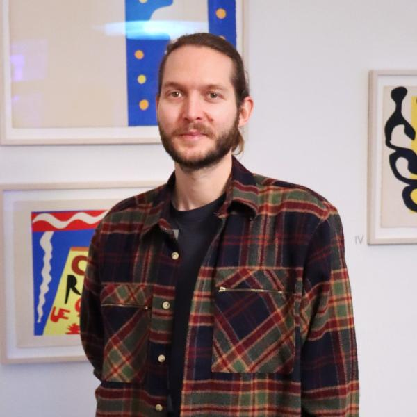
Philipp Wicke
Zander Labs
Brandenburg University of Technology Cottbus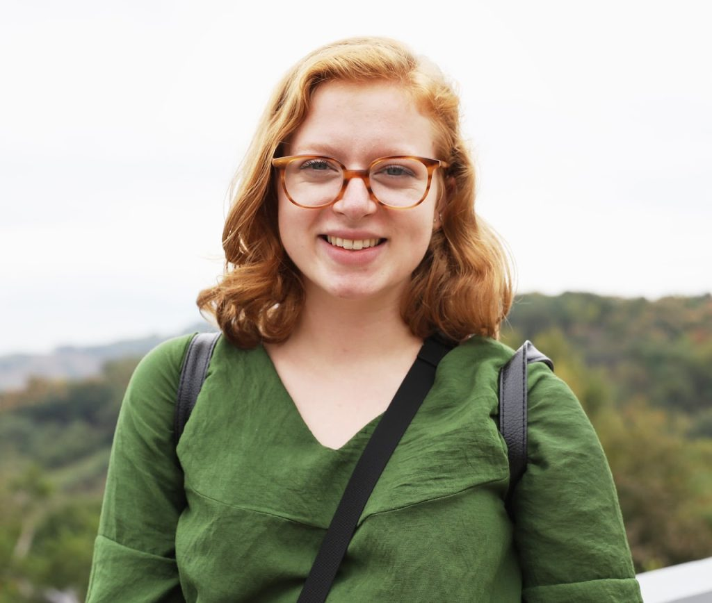
Catherine Arnett
EleutherAI
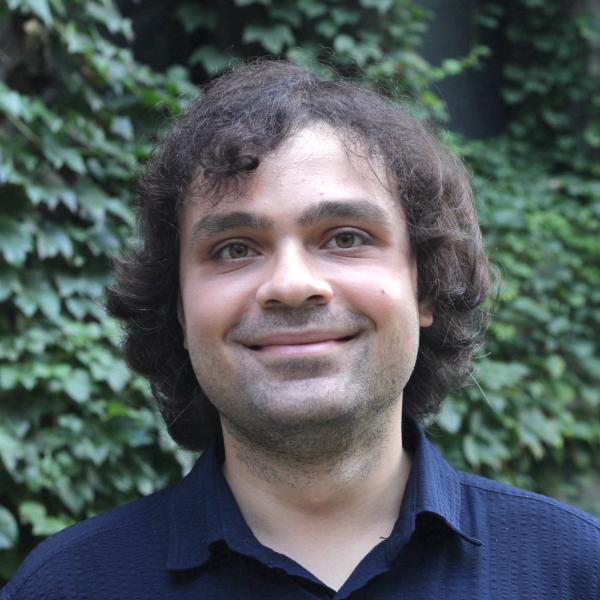
Sercan Karakaş
University of Chicago
Program Committee
To be announced
Workshop Information
BilingLM 2027 will be held in conjunction with COLING 2027 in Macau, China. Venue details, the call for papers, and the program will be announced here.
For conference information, please visit the COLING 2027 website.
Contact
For questions about the workshop, please contact:
- Hai Hu: hai.hu@polyu.edu.hk
- Siyuan Song: ss1280@princeton.edu